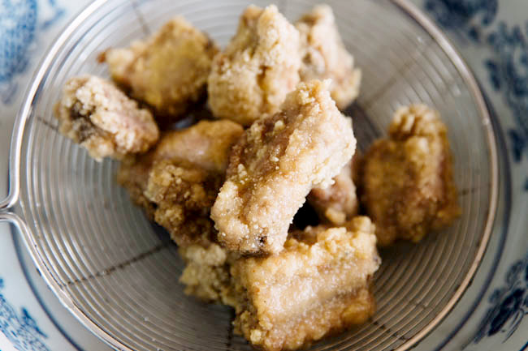

Salt And Pepper Short Rib
This is the recipe for asian style Salt And Pepper Short Rib.
Ingredients
| Ingredient Name | Quantity |
|---|---|
| Pork Rib | 300 g |
| Garlic | 5 cloves |
| Soy Sauce | 20 ml |
| Grinded Black Pepper | 5 g |
| Corn Starch | 35 g |
| Water | 20ml |
| Oil | Amount needed for pan fry or deep fry the ribs |
Directions
- Chop the pork ribs into 3 cm long pieces.
- Finely chop the garlic cloves
- Mix all the Ingredients by the following order: ribs, garlic, black pepper, soy sauce, corn starch, water.
- Marinate the ribs for at least 30 minutes.
- Pan fry or deep fry until the ribs are golden brown.
- Place the ribs on oil absorbing papper to filter out the oil.
- Serve and enjoy!
